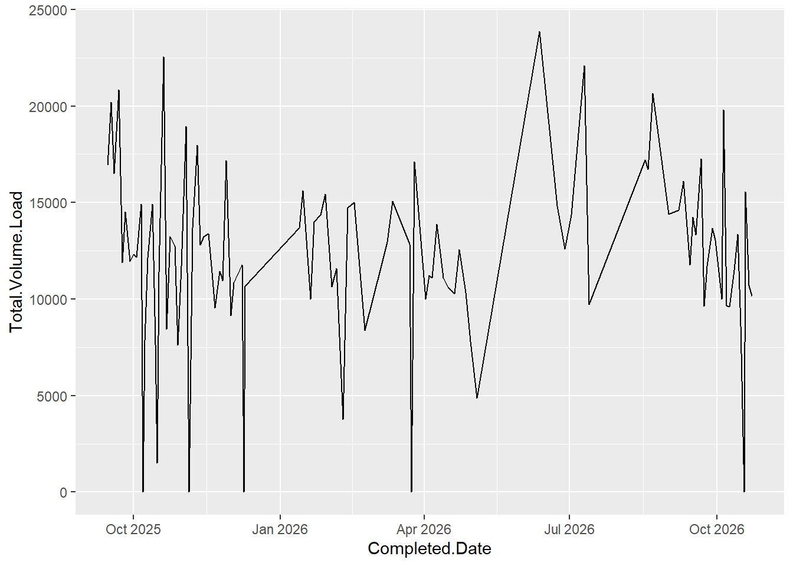
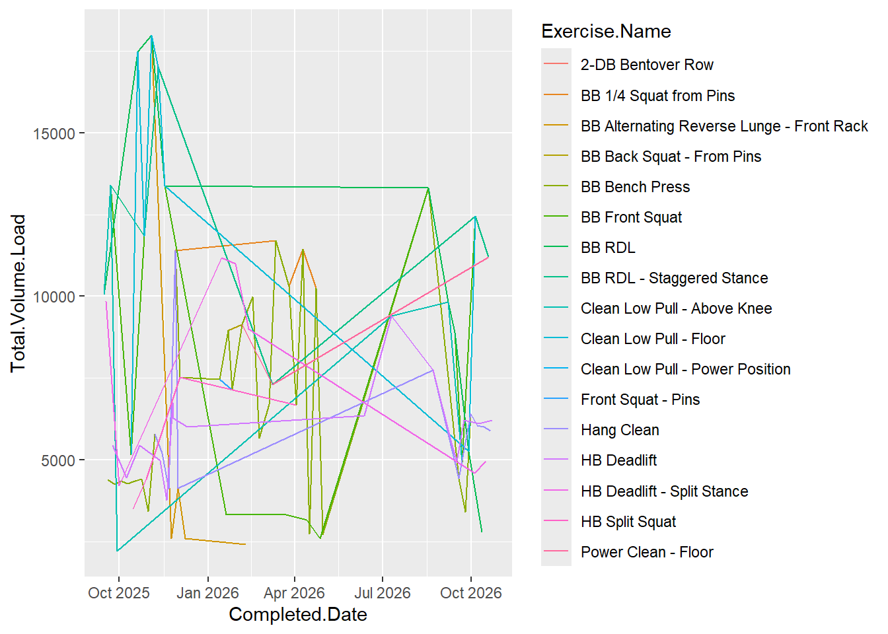
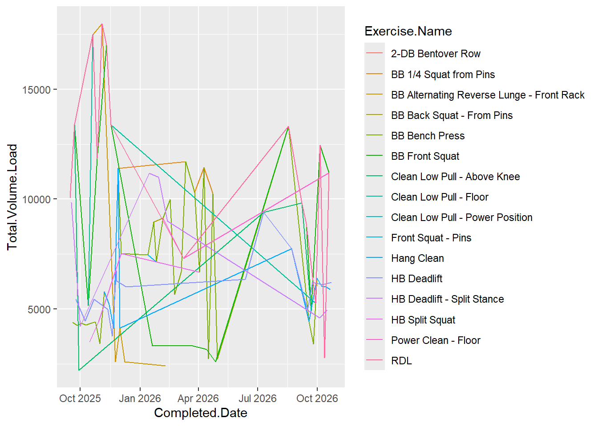
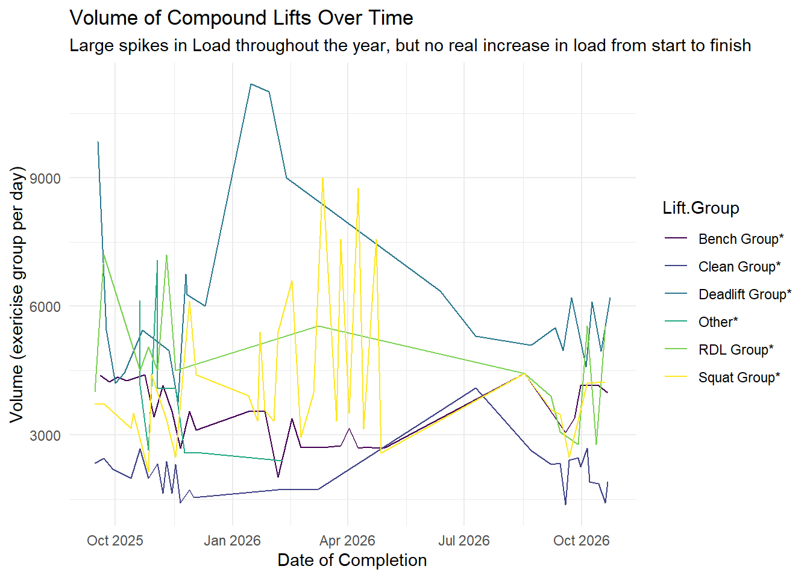
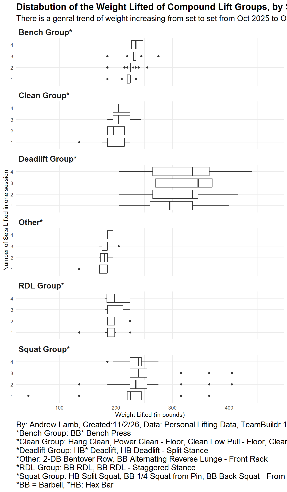
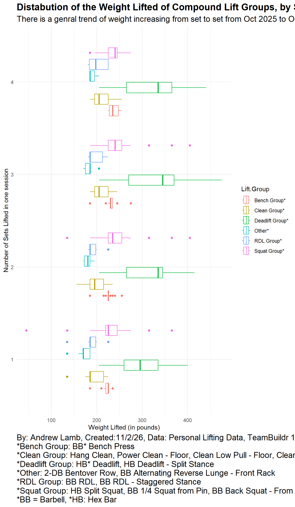

Personal Visualization Journey
Loading Packages
Loading data
First.Name Last.Name Exercise.Name Assigned.Date
1 Andrew Lamb RFE Pogos 9/15/2025
2 Andrew Lamb RFE Jumps 9/15/2025
3 Andrew Lamb Clean Low Pull - Above Knee 9/15/2025
4 Andrew Lamb Band Punch Anti Rotation 9/15/2025
5 Andrew Lamb Quad/Hip Flexor Stretch - 1/2 Kneeling 9/15/2025
6 Andrew Lamb BB Front Squat 9/15/2025
Completed.Date Sets Reps.Time Completion.Exercise Marked.Complete Result.1
1 9/15/2025 2 6 1 1 NA
2 9/15/2025 2 4 1 1 NA
3 9/15/2025 3 4 0 1 195
4 9/15/2025 3 10 1 1 NA
5 9/15/2025 3 10 0 1 0
6 9/15/2025 4 4 0 1 255
Reps.1 Result.2 Reps.2 Result.3 Reps.3 Result.4 Reps.4 Result.5 Reps.5
1 NA NA NA NA NA NA NA NA NA
2 NA NA NA NA NA NA NA NA NA
3 4 195 4 195 4 NA NA NA NA
4 NA NA NA NA NA NA NA NA NA
5 10 0 10 0 10 NA NA NA NA
6 4 225 4 225 4 225 4 NA NA
Result.6 Reps.6 Result.7 Reps.7 Result.8 Reps.8 Result.9 Reps.9 Result.10
1 NA NA NA NA NA NA NA NA NA
2 NA NA NA NA NA NA NA NA NA
3 NA NA NA NA NA NA NA NA NA
4 NA NA NA NA NA NA NA NA NA
5 NA NA NA NA NA NA NA NA NA
6 NA NA NA NA NA NA NA NA NA
Reps.10 Highest.Max Rep.Count Volume.Load Max.Allowed Opted.Out
1 NA NA 0 0 0 0
2 NA NA 0 0 0 0
3 NA 213 12 2340 0 0
4 NA NA 0 0 0 0
5 NA 0 60 0 0 0
6 NA 278 16 3720 0 0
Opt.Out.Reason Timestamp.Complete Timestamp.Updated Coach.Completed
1 NA 1757936784 0 0
2 NA 1757936785 0 0
3 NA 1757937187 1757937188 0
4 NA 1757937189 0 0
5 NA 1757937192 1757937197 0
6 NA 1757937621 1757938163 0
Time.Coach.Completed
1 0
2 0
3 0
4 0
5 0
6 0[1] 915 39Looking at the data
Code
# A tibble: 915 × 40
# Groups: Exercise.Name [103]
First.Name Last.Name Exercise.Name Assigned.Date Completed.Date Sets
<chr> <chr> <chr> <chr> <chr> <int>
1 Andrew Lamb Band Punch Anti Rota… 9/15/2025 9/15/2025 3
2 Andrew Lamb Band Punch Anti Rota… 9/22/2025 9/22/2025 3
3 Andrew Lamb Band Punch Anti Rota… 9/29/2025 9/29/2025 3
4 Andrew Lamb Band Punch Anti Rota… 10/6/2025 10/6/2025 3
5 Andrew Lamb Band Punch Anti Rota… 10/13/2025 10/13/2025 3
6 Andrew Lamb Band Punch Anti Rota… 10/20/2025 10/20/2025 3
7 Andrew Lamb Band Punch Anti Rota… 10/27/2025 10/27/2025 3
8 Andrew Lamb Band Punch Anti Rota… 11/3/2025 11/3/2025 3
9 Andrew Lamb Band Punch Anti Rota… 11/10/2025 11/10/2025 3
10 Andrew Lamb Band Punch Anti Rota… 11/17/2025 11/17/2025 3
# ℹ 905 more rows
# ℹ 34 more variables: Reps.Time <chr>, Completion.Exercise <int>,
# Marked.Complete <int>, Result.1 <dbl>, Reps.1 <int>, Result.2 <dbl>,
# Reps.2 <int>, Result.3 <dbl>, Reps.3 <int>, Result.4 <dbl>, Reps.4 <int>,
# Result.5 <lgl>, Reps.5 <lgl>, Result.6 <lgl>, Reps.6 <lgl>, Result.7 <lgl>,
# Reps.7 <lgl>, Result.8 <lgl>, Reps.8 <lgl>, Result.9 <lgl>, Reps.9 <lgl>,
# Result.10 <lgl>, Reps.10 <lgl>, Highest.Max <dbl>, Rep.Count <int>, …Code

Code

Code

Code
compound_lifts <- compound_lifts |>
mutate(Lift.Group = case_when(
str_detect(Exercise.Name, regex("RDL", ignore_case = TRUE)) ~ "RDL Group*",
str_detect(Exercise.Name, regex("Squat", ignore_case = TRUE)) ~ "Squat Group*",
str_detect(Exercise.Name, regex("Bench", ignore_case = TRUE)) ~ "Bench Group*",
str_detect(Exercise.Name, regex("Clean", ignore_case = TRUE)) ~ "Clean Group*",
str_detect(Exercise.Name, regex("Deadlift", ignore_case = TRUE)) ~ "Deadlift Group*",
TRUE ~ "Other*" # Default category if no pattern matches
))
compound_lifts |>
group_by(Lift.Group) |>
ggplot(aes(x=Completed.Date, y=Volume.Load, colour = Lift.Group))+
geom_line()+
scale_color_viridis_d()+
theme_minimal()+
labs(title = "Volume of Compound Lifts Over Time", subtitle = "Large spikes in Load throughout the year, but no real increase in load from start to finish", x = "Date of Completion", y = "Volume (exericise group per day)")
Code
compound_lifts |>
pivot_longer(cols = starts_with("Result."), names_to = "Set", values_to = "Weight", names_prefix = "Result.") |>
filter(Set <= 4, Set !=10) |>
ggplot(aes(x=Weight, y = Set))+
geom_boxplot() +
facet_wrap(~Lift.Group, ncol = 1, scale = "free_y")+
theme_minimal()+
theme(strip.text = element_text(hjust = 0, face = "bold", size = 14), plot.title = element_text(hjust = 0, face = "bold", size = 16), plot.caption = element_text(hjust = 0, size = 14), plot.subtitle = element_text(size = 14))+
labs(title = "Distabution of the Weight Lifted of Compound Lift Groups, by Sets", subtitle = "There is a genral trend of weight increasing from set to set from Oct 2025 to Oct 2026", x = "Weight Lifted (in pounds)", y = "Number of Sets Lifted in one session", caption = "By: Andrew Lamb, Created:11/2/26, Data: Personal Lifting Data, TeamBuildr 10/24/26
*Bench Group: BB* Bench Press
*Clean Group: Hang Clean, Power Clean - Floor, Clean Low Pull - Floor, Clean Low Pull - Power Position, Clean Low Pull - Above Knee
*Deadlift Group: HB* Deadlift, HB Deadlift - Split Stance
*Other: 2-DB Bentover Row, BB Alternating Reverse Lunge - Front Rack
*RDL Group: BB RDL, BB RDL - Staggered Stance
*Squat Group: HB Split Squat, BB 1/4 Squat from Pin, BB Back Squat - From Pins, BB Front Squat, Front Squat - Pins
*BB = Barbell, *HB: Hex Bar")
Code
# Attempt 2
compound_lifts |>
pivot_longer(cols = starts_with("Result."), names_to = "Set", values_to = "Weight", names_prefix = "Result.") |>
filter(Set <= 4, Set !=10) |>
ggplot(aes(x=Weight, y = Set, color = Lift.Group))+
geom_boxplot() +
theme_minimal()+
theme(strip.text = element_text(hjust = 0, face = "bold", size = 14), plot.title = element_text(hjust = 0, face = "bold", size = 16), plot.caption = element_text(hjust = 0, size = 14), plot.subtitle = element_text(size = 14))+
labs(title = "Distabution of the Weight Lifted of Compound Lift Groups, by Sets", subtitle = "There is a genral trend of weight increasing from set to set from Oct 2025 to Oct 2026", x = "Weight Lifted (in pounds)", y = "Number of Sets Lifted in one session", caption = "By: Andrew Lamb, Created:11/2/26, Data: Personal Lifting Data, TeamBuildr 10/24/26
*Bench Group: BB* Bench Press
*Clean Group: Hang Clean, Power Clean - Floor, Clean Low Pull - Floor, Clean Low Pull - Power Position, Clean Low Pull - Above Knee
*Deadlift Group: HB* Deadlift, HB Deadlift - Split Stance
*Other: 2-DB Bentover Row, BB Alternating Reverse Lunge - Front Rack
*RDL Group: BB RDL, BB RDL - Staggered Stance
*Squat Group: HB Split Squat, BB 1/4 Squat from Pin, BB Back Squat - From Pins, BB Front Squat, Front Squat - Pins
*BB = Barbell, *HB: Hex Bar")